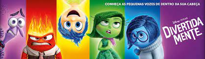
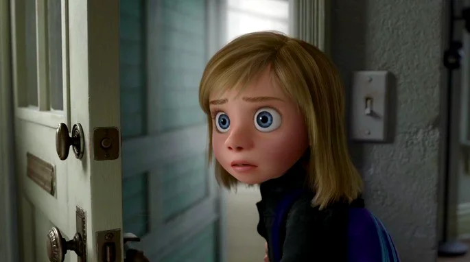
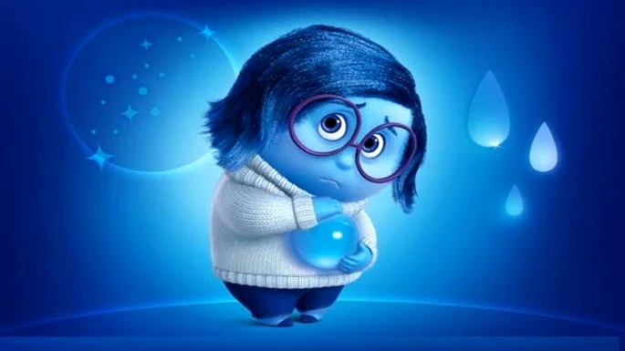

Riley é a protagonista do filme, acompanhamos o seu crescimento desde o dia do seu nascimento até a sua pré-adolescência. A garota é como qualquer menina norte-americana: sente medo, angústia, insegurança e ansiedade. Ela está aprendendo a lidar com o seu próprio corpo e com quem está a sua volta.
Assistimos o funcionamento do cérebro de Riley e é a partir dele que conseguimos entender o funcionamento das cinco emoções base: a Alegria, a Tristeza, o Medo, a Raiva e o Nojinho.

Assim que Riley abre o olho ao sair da barriga da sua mãe aparece a Alegria, uma das principais emoções do centro de comando do cérebro da menina. Ao ouvir a voz do pai e encarar a expressão da mãe, a Alegria - que tem o corpo com o formato de uma estrela - comparece fazendo imediatamente Riley sorrir.
A Alegria está presente em todos os momentos felizes da vida da garota e tem um papel central no seu bem estar.

A Tristeza é um sentimento essencial de Riley e fundamental para o amadurecimento da menina. Ao se deparar com situações inesperadas - como a súbita mudança de cidade - Riley se sente deprimida, sozinha, e a Tristeza ganha força. Fisicamente o corpo da personagem tem o contorno de uma gota e é azul.
Um dos ensinamentos de Divertida Mente é justamente a importância da Tristeza, que costuma ser deixada de lado sempre que possível na sociedade contemporânea.

O Medo é responsável por muitas das reações de repulsa de Riley, quando ele entra em ação a menina tem o impulso de escapar da situação em que se encontra o mais rapidamente possível.
Apesar de tendermos a menosprezar e a diminuir ao máximo o Medo, ele acaba por se provar como um sentimento essencial para a proteção do indivíduo.

Baixinho, vermelho, com muitos dentes e engravatado, essa é a representação da Raiva de Riley. Quando as coisas não acontecem conforme o esperado, a Raiva entra em ação e domina a sala de comando do pensamento.
Em diversas situações chave vemos a menina se render à raiva, o sentimento começa a ficar especialmente potente quando Riley cresce e entra na pré-adolescência.

As situações em que Nojinho mais aparece envolvem a refeição, especialmente quando há brócolis no prato (Nojinho, aliás, é concebida com a cor e o formato de um brócolis).
Ao menor alerta de Nojinho, Riley imediatamente se afasta da circunstância que lhe provoca repulsa.